<meta charset="utf-8">
<title>YAE View</title>
<meta name="description" content="画像・動画・PDFを並べて確かめる、Windows用のビューア。">
<meta name="viewport" content="width=device-width, initial-scale=1">
<link rel="icon" href="img/icon.png">
<link rel="alternate" hreflang="ja" href="https://yaeview.com/">
<link rel="alternate" hreflang="en" href="https://yaeview.com/en/">
<link rel="alternate" hreflang="x-default" href="https://yaeview.com/">
<link rel="preconnect" href="https://fonts.googleapis.com">
<link rel="preconnect" href="https://fonts.gstatic.com" crossorigin>
<link rel="stylesheet" href="https://fonts.googleapis.com/css2?family=IBM+Plex+Mono:wght@400;500&family=IBM+Plex+Sans+JP:wght@400;500;600;700&display=swap">

<style>
/* ---------------------------------------------------------------
   Tokens. Taken from the app's own src/styles.css :root so the site
   and the product read as one thing. The ground is a shade cooler and
   darker than the app's #0a0a0a, so screenshots of the app sit *on*
   the page rather than dissolving into it.

   Deliberately single-theme: the product is a dark tool and every
   screenshot is dark UI, so a light rendering would leave the images
   floating on a ground they were never made for. Every colour is
   therefore painted explicitly, including on body.
   --------------------------------------------------------------- */
:root {
  --ink:        #08090b;
  --surface:    #101216;
  --raised:     #181c22;
  --line:       rgba(233, 238, 245, 0.10);
  --line-firm:  rgba(233, 238, 245, 0.20);
  --text:       #e8eaed;
  --muted:      rgba(233, 238, 245, 0.56);
  --faint:      rgba(233, 238, 245, 0.34);
  --accent:     #4aa8e0;
  --accent-tint: rgba(74, 168, 224, 0.10);
  --good:       #4cc38a;

  --sans: "IBM Plex Sans JP", "Yu Gothic UI", "Hiragino Kaku Gothic ProN", Meiryo, sans-serif;
  --mono: "IBM Plex Mono", "SFMono-Regular", Consolas, monospace;

  --gutter: clamp(20px, 5vw, 72px);
  --measure: 34em;
}

*, *::before, *::after { box-sizing: border-box; }

html { -webkit-text-size-adjust: 100%; scroll-behavior: smooth; }
@media (prefers-reduced-motion: reduce) { html { scroll-behavior: auto; } }

body {
  margin: 0;
  background: var(--ink);
  color: var(--text);
  font-family: var(--sans);
  font-size: 16px;
  line-height: 1.75;
  font-feature-settings: "palt" 1;
  -webkit-font-smoothing: antialiased;
}

img, video { max-width: 100%; display: block; }

a { color: var(--accent); text-decoration-thickness: 1px; text-underline-offset: 3px; }
a:focus-visible, button:focus-visible {
  outline: 2px solid var(--accent);
  outline-offset: 3px;
  border-radius: 2px;
}

h1, h2, h3 { text-wrap: balance; margin: 0; font-weight: 700; letter-spacing: -0.02em; }
p { margin: 0; }

.wrap { max-width: 1180px; margin-inline: auto; padding-inline: var(--gutter); }

/* --- eyebrow -------------------------------------------------- */
/* The numbers are the order of the work itself: put things in, lay
   them out, check them, get them out, hand them over. They are not
   decoration, so they only appear on the workflow sections. */
.eyebrow {
  font-family: var(--mono);
  font-size: 12px;
  font-weight: 500;
  letter-spacing: 0.14em;
  color: var(--faint);
  display: flex;
  align-items: baseline;
  gap: 12px;
  margin-bottom: 18px;
}
.eyebrow .n { color: var(--accent); }
.eyebrow::after {
  content: "";
  flex: 1;
  height: 1px;
  background: var(--line);
  transform: translateY(-4px);
}

/* --- masthead ------------------------------------------------- */
.masthead {
  position: sticky;
  top: 0;
  z-index: 20;
  background: rgba(8, 9, 11, 0.86);
  backdrop-filter: blur(14px);
  border-bottom: 1px solid var(--line);
}
.masthead .wrap {
  display: flex;
  align-items: center;
  gap: 14px;
  height: 60px;
}
.mark { display: flex; align-items: center; gap: 10px; font-weight: 600; letter-spacing: -0.01em; }
.mark img { width: 26px; height: 26px; border-radius: 5px; }
.masthead nav { margin-left: auto; display: flex; gap: 26px; font-size: 14px; }
.masthead nav a { color: var(--muted); text-decoration: none; }
.masthead nav a:hover { color: var(--text); }
.masthead .lang {
  margin-left: auto; font-size: 13px; color: var(--muted); text-decoration: none;
  border: 1px solid var(--line); border-radius: 999px; padding: 4px 12px;
}
.masthead nav + .lang { margin-left: 26px; }
.masthead .lang:hover { color: var(--text); border-color: var(--line-firm); }
@media (max-width: 720px) {
  .masthead nav { display: none; }
  /* nav is hidden but still adjacent, so the rule below would keep its
     26px and leave the switch stranded beside the logo. */
  .masthead nav + .lang { margin-left: auto; }
}

/* --- hero ----------------------------------------------------- */
.hero { padding: clamp(56px, 9vw, 108px) 0 clamp(40px, 6vw, 72px); }
.hero h1 {
  font-size: clamp(38px, 6.4vw, 76px);
  line-height: 1.1;
  letter-spacing: -0.035em;
  max-width: 16em;
}
.hero h1 .soft { color: var(--muted); }

/* Text left, the app's own icon right. The video below stays full width, so
   the hero reads as one block rather than two competing pictures. */
.hero-top {
  display: grid;
  grid-template-columns: minmax(0, 1fr) auto;
  align-items: center;
  gap: clamp(28px, 5vw, 72px);
}
.hero-icon {
  width: clamp(112px, 13vw, 184px);
  height: auto;
  border-radius: 22%;
  /* the accent at low alpha, so the plate sits on the page instead of
     floating on it - no new colour is introduced */
  filter: drop-shadow(0 20px 44px rgba(74, 168, 224, 0.24));
}
@media (max-width: 860px) {
  /* Beside the heading the icon would squeeze the text; above it, it reads
     as a mark rather than an illustration. */
  .hero-top { grid-template-columns: 1fr; gap: 26px; }
  .hero-icon { grid-row: 1; width: clamp(76px, 18vw, 104px); }
}
.lede {
  margin-top: 26px;
  max-width: var(--measure);
  font-size: clamp(16px, 1.5vw, 19px);
  color: var(--muted);
}

.cta-row { margin-top: 40px; display: flex; flex-wrap: wrap; align-items: center; gap: 18px 24px; }
.download {
  display: inline-flex;
  align-items: center;
  gap: 12px;
  padding: 15px 28px;
  background: var(--accent);
  color: #04121c;
  font-weight: 700;
  font-size: 17px;
  letter-spacing: -0.01em;
  border-radius: 3px;
  text-decoration: none;
  transition: transform 140ms ease, box-shadow 140ms ease;
}
.download:hover { transform: translateY(-1px); box-shadow: 0 10px 30px -12px var(--accent); }
.download svg { width: 18px; height: 18px; }
.meta { font-family: var(--mono); font-size: 13px; color: var(--faint); line-height: 1.6; }
.meta b { color: var(--muted); font-weight: 500; }

/* --- framed media --------------------------------------------- */
/* Just a border. This used to carry a mock title bar with the app's
   icon and name, which stopped being true when the real title bar was
   rearranged - invented chrome that no longer matches the product is
   worse than none. The film shows the application full frame anyway. */
.frame {
  margin-top: clamp(40px, 6vw, 68px);
  border: 1px solid var(--line-firm);
  border-radius: 8px;
  overflow: hidden;
  background: var(--surface);
}
.frame video, .frame img { width: 100%; }

/* --- the film's play button ------------------------------------ */
/* The native control bar puts a small play button in the corner and
   sits a grey strip over the poster. The application itself shows a
   big triangle over the whole frame, so the site does the same.

   The button is added by script, not written here: without script the
   video keeps its native controls and still plays. Adding the button
   in the markup would leave a dead button on a page whose script
   failed to run. */
.player { position: relative; }

.player .play {
  position: absolute;
  inset: 0;
  width: 100%;
  height: 100%;
  display: grid;
  place-items: center;
  padding: 0;
  border: 0;
  background: rgba(0, 0, 0, 0.34);
  cursor: pointer;
  transition: background-color 0.18s ease;
}
.player .play:hover { background: rgba(0, 0, 0, 0.46); }
.player .play:focus-visible { outline: 2px solid var(--accent); outline-offset: -3px; }

.player .play svg {
  width: clamp(58px, 7.5vw, 92px);
  height: auto;
  /* the poster is light in places, so the triangle carries its own edge */
  filter: drop-shadow(0 3px 14px rgba(0, 0, 0, 0.55));
  transition: transform 0.18s ease;
}
.player .play:hover svg { transform: scale(1.06); }

@media (prefers-reduced-motion: reduce) {
  .player .play, .player .play svg { transition: none; }
  .player .play:hover svg { transform: none; }
}

/* --- thesis --------------------------------------------------- */
.thesis { padding: clamp(56px, 8vw, 96px) 0; border-top: 1px solid var(--line); }
.thesis h2 { font-size: clamp(24px, 3vw, 34px); letter-spacing: -0.03em; max-width: 20em; }
.pillars {
  margin-top: 44px;
  display: grid;
  grid-template-columns: repeat(auto-fit, minmax(240px, 1fr));
  gap: 1px;
  background: var(--line);
  border: 1px solid var(--line);
}
.pillar { background: var(--ink); padding: 30px 28px; }
.pillar h3 { font-size: 17px; margin-bottom: 10px; }
.pillar p { font-size: 14.5px; color: var(--muted); }

/* --- workflow sections ---------------------------------------- */
.step { padding: clamp(56px, 8vw, 100px) 0; border-top: 1px solid var(--line); }
.step-grid {
  display: grid;
  grid-template-columns: minmax(0, 5fr) minmax(0, 7fr);
  gap: clamp(32px, 5vw, 72px);
  align-items: center;
}
.step:nth-of-type(even) .step-grid > .copy { order: 2; }
.step h2 { font-size: clamp(26px, 3.4vw, 40px); letter-spacing: -0.032em; line-height: 1.28; }
.step .copy p { margin-top: 20px; color: var(--muted); max-width: var(--measure); }
.step ul {
  margin: 26px 0 0;
  padding: 0;
  list-style: none;
  display: grid;
  gap: 11px;
  font-size: 15px;
}
.step ul li { padding-left: 20px; position: relative; color: var(--muted); }
.step ul li::before {
  content: "";
  position: absolute;
  left: 0; top: 0.7em;
  width: 7px; height: 1px;
  background: var(--accent);
}
.step ul li b { color: var(--text); font-weight: 600; }

.shot { border: 1px solid var(--line); border-radius: 6px; overflow: hidden; background: var(--surface); }
.shot img { width: 100%; }
.shot-pair { display: grid; gap: 14px; }

/* Where the name comes from - a line you may skip, so it sits below the copy
   rather than inside it. Spacing and rule match .fmt-group. max-width is
   dropped because .step .copy p's 34em would leave the rule short and
   floating, narrower than the text above it. */
.step .copy p.origin {
  max-width: none;
  margin-top: 26px;
  padding-top: 26px;
  border-top: 1px solid var(--line);
  font-size: 14px;
  color: var(--muted);
}
.step .copy p.origin b { color: var(--text); font-weight: 600; }

@media (max-width: 860px) {
  .step-grid { grid-template-columns: 1fr; }
  .step:nth-of-type(even) .step-grid > .copy { order: 0; }
}

/* --- keycap --------------------------------------------------- */
kbd {
  font-family: var(--mono);
  font-size: 0.86em;
  padding: 2px 7px;
  border: 1px solid var(--line-firm);
  border-bottom-width: 2px;
  border-radius: 4px;
  background: var(--raised);
  color: var(--text);
  white-space: nowrap;
}

/* --- extras grid ---------------------------------------------- */
.extras { padding: clamp(56px, 8vw, 100px) 0; border-top: 1px solid var(--line); }
.extras h2 { font-size: clamp(24px, 3vw, 34px); letter-spacing: -0.03em; }
.cards {
  margin-top: 42px;
  display: grid;
  grid-template-columns: repeat(3, minmax(0, 1fr));
  gap: 1px;
  background: var(--line);
  border: 1px solid var(--line);
}
@media (max-width: 860px) { .cards { grid-template-columns: 1fr; } }
.card { background: var(--ink); padding: 28px; }
.card h3 { font-size: 16px; margin-bottom: 10px; }
.card p { font-size: 14.5px; color: var(--muted); }

/* --- formats -------------------------------------------------- */
.formats { padding: clamp(56px, 8vw, 100px) 0; border-top: 1px solid var(--line); }
.formats h2 { font-size: clamp(24px, 3vw, 34px); letter-spacing: -0.03em; }
.fmt-lede { margin-top: 20px; max-width: var(--measure); color: var(--muted); }
.fmt-group { margin-top: 40px; display: grid; grid-template-columns: 88px minmax(0, 1fr); gap: 18px 24px; align-items: start; }
.fmt-group + .fmt-group { margin-top: 26px; padding-top: 26px; border-top: 1px solid var(--line); }
.fmt-label { font-family: var(--mono); font-size: 12px; letter-spacing: 0.12em; color: var(--faint); padding-top: 6px; }
.chips { display: flex; flex-wrap: wrap; gap: 8px; }
/* Accent rather than muted grey: at 13px the muted tone only reaches
   5.7:1 against the ground, and the accent reaches 6.8:1. All of them,
   so none reads as more supported than the rest. */
.chip {
  font-family: var(--mono);
  font-size: 13px;
  padding: 4px 11px;
  border: 1px solid rgba(74, 168, 224, 0.34);
  border-radius: 3px;
  color: var(--accent);
  background: var(--accent-tint);
}
.fmt-note { margin-top: 30px; font-size: 14px; color: var(--faint); max-width: var(--measure); }

/* --- install -------------------------------------------------- */
.install { padding: clamp(56px, 8vw, 100px) 0; border-top: 1px solid var(--line); }
.install h2 { font-size: clamp(24px, 3vw, 34px); letter-spacing: -0.03em; }
.steps { margin-top: 40px; display: grid; gap: 26px; counter-reset: s; }
.steps li { display: grid; grid-template-columns: 40px minmax(0, 1fr); gap: 20px; }
.steps li::before {
  counter-increment: s;
  content: counter(s, decimal-leading-zero);
  font-family: var(--mono);
  font-size: 13px;
  color: var(--accent);
  padding-top: 4px;
}
.steps h3 { font-size: 16.5px; margin-bottom: 8px; }
.steps p { color: var(--muted); font-size: 15px; max-width: var(--measure); }
.steps ol { margin: 0; padding: 0; list-style: none; }

.notice {
  margin-top: 44px;
  border: 1px solid var(--line);
  border-left: 2px solid var(--accent);
  background: var(--surface);
  padding: 24px 26px;
  border-radius: 0 4px 4px 0;
}
.notice h3 { font-size: 15px; margin-bottom: 10px; }
.notice p { font-size: 14.5px; color: var(--muted); max-width: var(--measure); }
.notice p + p { margin-top: 10px; }

/* --- report form ---------------------------------------------- */
.report { padding: clamp(56px, 8vw, 100px) 0; border-top: 1px solid var(--line); }
.report h2 { font-size: clamp(24px, 3vw, 34px); letter-spacing: -0.03em; }
.report .intro { margin-top: 20px; color: var(--muted); max-width: var(--measure); }
.form { margin-top: 40px; max-width: 640px; display: grid; gap: 24px; }
.field { display: grid; gap: 9px; }
.field > label { font-size: 14px; font-weight: 600; }
.field .hint { font-size: 13px; color: var(--faint); }

.form input[type="text"], .form input[type="email"], .form textarea {
  width: 100%;
  font: inherit;
  font-size: 15px;
  color: var(--text);
  background: var(--surface);
  border: 1px solid var(--line-firm);
  border-radius: 3px;
  padding: 12px 14px;
  resize: vertical;
}
.form textarea { min-height: 132px; line-height: 1.7; }
.form textarea.log { font-family: var(--mono); font-size: 13px; min-height: 96px; }
.form input::placeholder, .form textarea::placeholder { color: var(--faint); }
.form input:focus-visible, .form textarea:focus-visible {
  outline: none;
  border-color: var(--accent);
  box-shadow: 0 0 0 3px rgba(74, 168, 224, 0.16);
}

/* Diagnostics stay visible and editable. The app promises people it will
   never send anything they have not seen first, and this has to keep that
   promise - hidden fields would quietly break it. */
.diag {
  font-family: var(--mono);
  font-size: 13px;
  color: var(--muted);
  background: var(--raised);
  border: 1px solid var(--line);
  border-radius: 3px;
  padding: 12px 14px;
  white-space: pre-wrap;
  overflow-x: auto;
  min-height: 3em;
}
.diag:focus-visible { outline: none; border-color: var(--accent); }

.submit {
  justify-self: start;
  font: inherit;
  font-weight: 700;
  font-size: 16px;
  padding: 14px 30px;
  border: 0;
  border-radius: 3px;
  background: var(--accent);
  color: #04121c;
  cursor: pointer;
}
.submit:disabled { opacity: 0.5; cursor: default; }
.form-note { font-size: 13.5px; color: var(--faint); }
.form-status { font-size: 14.5px; min-height: 1.6em; }
.form-status[data-tone="ok"] { color: var(--good); }
.form-status[data-tone="ng"] { color: #f0674f; }
.hp { position: absolute; left: -9999px; width: 1px; height: 1px; overflow: hidden; }

/* --- closing -------------------------------------------------- */
.closing { padding: clamp(64px, 9vw, 120px) 0; border-top: 1px solid var(--line); text-align: center; }
.closing h2 { font-size: clamp(28px, 4.4vw, 50px); letter-spacing: -0.035em; }
.closing .cta-row { justify-content: center; margin-top: 36px; }

footer { border-top: 1px solid var(--line); padding: 34px 0 56px; }
footer .wrap { display: flex; flex-wrap: wrap; gap: 14px 28px; align-items: center; font-size: 13.5px; color: var(--faint); }
footer .sep { margin-left: auto; }
footer a { color: var(--muted); text-decoration: none; }
footer a:hover { color: var(--text); }

/* --- entrance ------------------------------------------------- */
/* Content is visible by default and only hidden once the script has
   confirmed it can reveal it again. Hiding first would mean a stalled
   observer, a script error or a blocked file leaves the page blank. */
:root.js-anim .rise { opacity: 0; transform: translateY(16px); }
:root.js-anim .rise.in { opacity: 1; transform: none; }
.rise { transition: opacity 620ms ease, transform 620ms ease; }
@media (prefers-reduced-motion: reduce) {
  .rise { transition: none; }
  .download { transition: none; }
}
</style>

<header class="masthead">
  <div class="wrap">
    <span class="mark">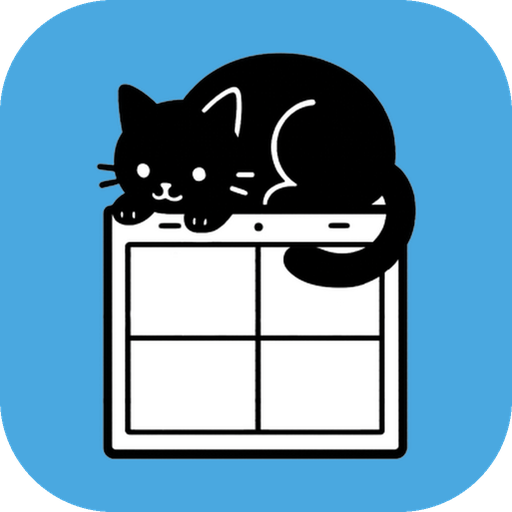YAE View</span>
    <nav>
      <a href="#features">できること</a>
      <a href="#formats">対応形式</a>
      <a href="#install">インストール</a>
      <a href="#report">不具合・要望</a>
    </nav>
    <a class="lang" href="en/" hreflang="en" lang="en">English</a>
  </div>
</header>

<main>
  <section class="hero">
    <div class="wrap">
      <div class="hero-top">
        <div>
          <h1>画像も動画もPDFも、<br><span class="soft">8つの窓から、次々に。</span></h1>
          <p class="lede">
            画面を最大8つのパネルに区切ります。ひとつひとつが別のフォルダを覗く窓なので、
            ホイールを回すだけで中身が次々に入れ替わります。
          </p>
        </div>
        
      </div>

      <div class="cta-row">
        <a class="download" href="https://github.com/saori-subaru/yaeview/releases/latest" rel="noopener">
          <svg viewBox="0 0 24 24" fill="none" stroke="currentColor" stroke-width="2.2" stroke-linecap="round" stroke-linejoin="round" aria-hidden="true">
            <path d="M12 3v12m0 0l-4.5-4.5M12 15l4.5-4.5M4 20h16"/>
          </svg>
          Windows版をダウンロード
        </a>
        <p class="meta">
          <b data-version>v0.1.19</b> ／ Windows 10・11（64bit）<br>
          インストーラ形式<span data-size></span>
        </p>
      </div>

      <div class="frame">
        <div class="player">
          <video src="img/yae-view.mp4" poster="img/poster.jpg" controls preload="none" playsinline></video>
        </div>
      </div>
    </div>
  </section>

  <section class="thesis">
    <div class="wrap">
      <h2 class="rise">1枚ずつ開いて、閉じて、また開く。<br>その往復をなくすために作りました。</h2>
      <div class="pillars rise">
        <div class="pillar">
          <h3>あちこちを、一度に</h3>
          <p>パネルごとに別のフォルダを開けます。種類ごとにパネルが分かれるので、画像・動画・PDFが混ざることもありません。</p>
        </div>
        <div class="pillar">
          <h3>形式を意識しない</h3>
          <p>PSD も CLIP STUDIO のファイルも RAW も、変換せずにそのまま開きます。ZIP は解凍せずに中身を並べます。</p>
        </div>
        <div class="pillar">
          <h3>待たされない</h3>
          <p>起動を待つ時間も、次の絵を待つ時間もありません。ホイールを回した先は、もう表示されています。</p>
        </div>
      </div>
    </div>
  </section>

  <div id="features"></div>

  <section class="step">
    <div class="wrap step-grid rise">
      <div class="copy">
        <p class="eyebrow"><span class="n">01</span> 入れる</p>
        <h2>フォルダごと、放り込むだけ。</h2>
        <p>エクスプローラーから投げ込めば、そのまま並びます。1ファイルずつ選ぶ必要も、読み込みを待つ必要もありません。</p>
        <ul>
          <li>フォルダやファイルを<b>ドラッグ＆ドロップ</b></li>
          <li><b>サブフォルダの中まで</b>まとめてチェック</li>
          <li><b>プロジェクトごと</b>に、開いた状態がまるごと戻ります</li>
        </ul>
      </div>
      <div class="shot">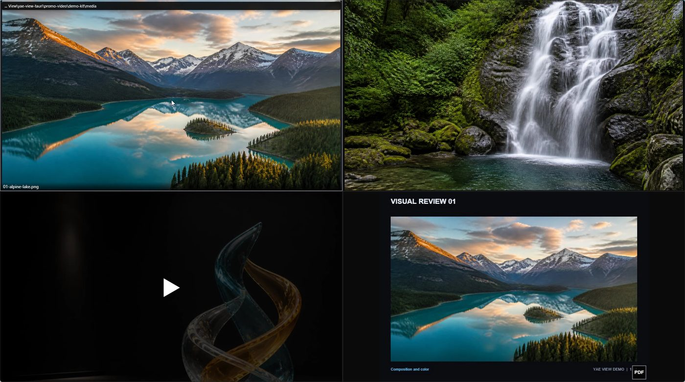</div>
    </div>
  </section>

  <section class="step">
    <div class="wrap step-grid rise">
      <div class="copy">
        <p class="eyebrow"><span class="n">02</span> 並べる</p>
        <h2>1〜8分割。<br>用途に合わせて、すぐ切り替え。</h2>
        <p>分割数はいつでも変えられます。</p>
        <ul>
          <li>パネルを<b>ドラッグして並べ替え</b></li>
          <li>各パネルが<b>別々のフォルダ</b>を持てます</li>
          <li>画像・動画・PDFは<b>それぞれ別のパネル</b>に分類され、混ざりません</li>
        </ul>
        <p class="origin"><b>八重（やえ）</b>— 八つ重ね。最大8枚を重ねて並べられることから、この名前にしました。</p>
      </div>
      <div class="shot">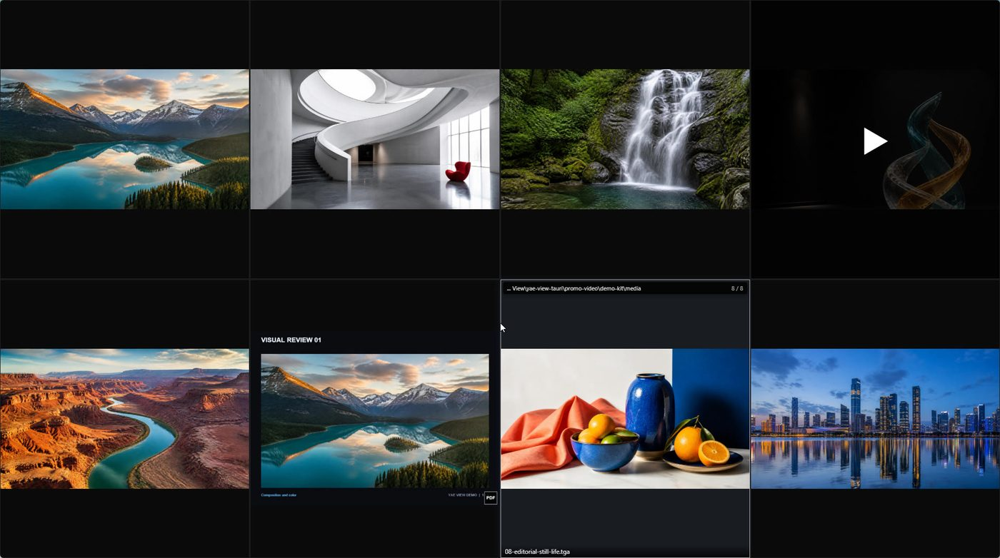</div>
    </div>
  </section>

  <section class="step">
    <div class="wrap step-grid rise">
      <div class="copy">
        <p class="eyebrow"><span class="n">03</span> 送る</p>
        <h2>ホイールひとつ。<br>画像は次へ、動画はコマ送り。</h2>
        <p>パネルの上でホイールを回すだけです。中身が画像なら次の1枚へ、動画なら<b>1コマずつ</b>前後に動きます。</p>
        <ul>
          <li>画像は<b>次のファイルへ</b>、PDFは<b>次のページへ</b></li>
          <li>動画は<b>1コマ送り／1コマ戻し</b></li>
          <li><b>プレイリスト</b>でフォルダごと連続再生・リピート</li>
          <li>再生速度は<b>0.1倍から4倍</b>まで。送り戻しの秒数も選べます</li>
        </ul>
      </div>
      <div class="shot">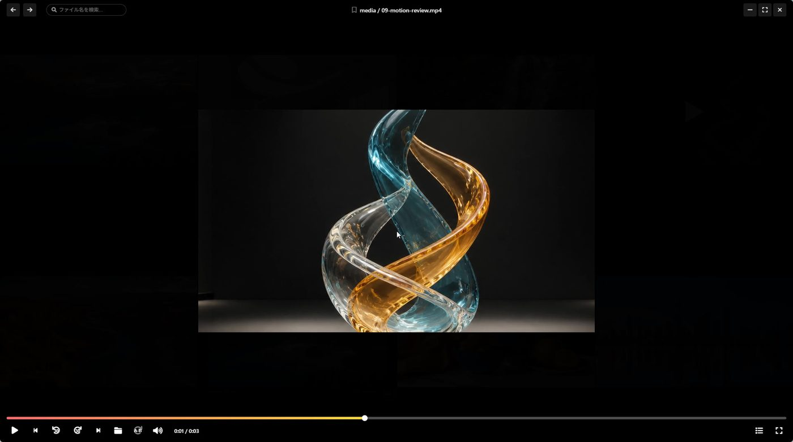</div>
    </div>
  </section>

  <section class="step">
    <div class="wrap step-grid rise">
      <div class="copy">
        <p class="eyebrow"><span class="n">04</span> 確かめる</p>
        <h2>気になる1枚は、<br>フルスクリーンで大きく。</h2>
        <p>拡大して、細部まで確かめられます。</p>
        <ul>
          <li><b>拡大・90度回転・左右反転・トリミング</b></li>
          <li><b>見開きモード</b>で、二枚並べて表示</li>
          <li>メモで<b>手書き・図形・文字・画像の貼り付け</b></li>
        </ul>
      </div>
      <div class="shot shot-pair">
        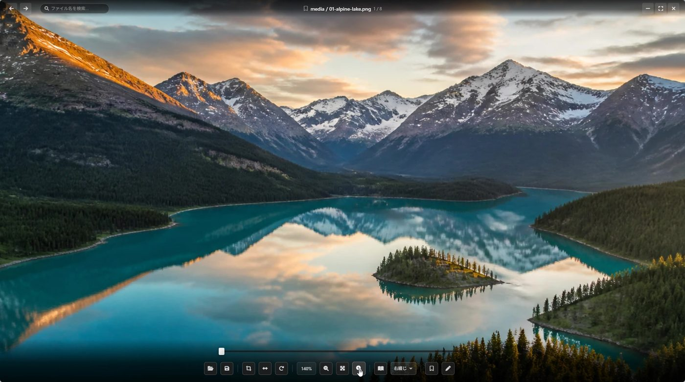
        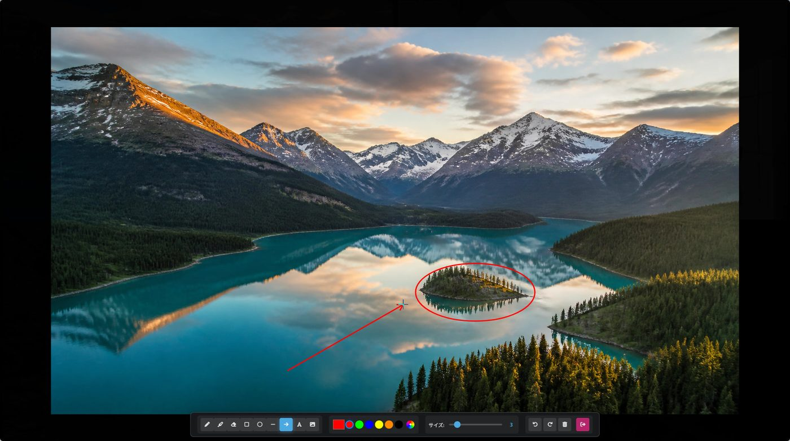
      </div>
    </div>
  </section>

  <section class="step">
    <div class="wrap step-grid rise">
      <div class="copy">
        <p class="eyebrow"><span class="n">05</span> 比べる</p>
        <h2>直す前を、隣に残したまま。</h2>
        <p>パネルの表示を固定すると、元のファイルが書き換わっても絵はそのままです。直した結果を隣に並べて、行ったり来たりせずに見比べられます。</p>
        <ul>
          <li>固定したパネルは<b>更新されません</b></li>
          <li>同じ絵を2つ並べて、<b>片方だけ固定</b></li>
        </ul>
      </div>
      <div class="shot">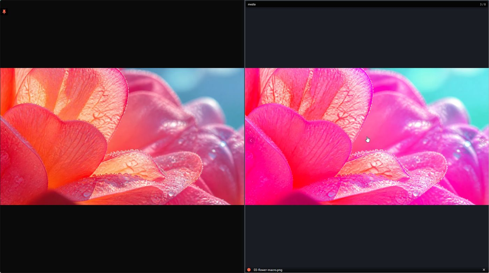</div>
    </div>
  </section>

  <section class="step">
    <div class="wrap step-grid rise">
      <div class="copy">
        <p class="eyebrow"><span class="n">06</span> 直す</p>
        <h2>開いたまま、その場で編集。</h2>
        <p>書き出して、別のソフトで開いて、また戻る。その往復が要りません。</p>
        <ul>
          <li>色や明るさは<b>調整レイヤー</b>で。元の絵は触らないので、あとから戻せます</li>
          <li>直したら<b>そのまま上書き</b>。保存先を選び直さずに済みます</li>
          <li>落ちても<b>自動保存</b>から戻せるので、やり直しになりません</li>
        </ul>
      </div>
      <div class="shot">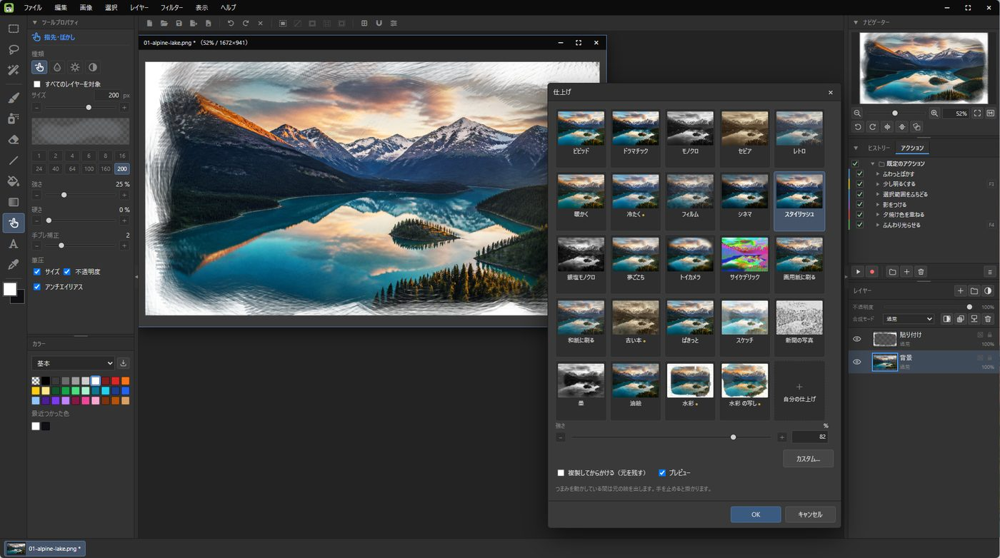</div>
    </div>
  </section>

  <section class="step">
    <div class="wrap step-grid rise">
      <div class="copy">
        <p class="eyebrow"><span class="n">07</span> 片づける</p>
        <h2>全部いちどに。<br>選んで、片づける。</h2>
        <p>プロジェクトのファイルを画面いっぱいに並べられます。<b>ラベルの色で絞り込める</b>ので、「赤だけ」にしてまとめてゴミ箱へ送る、といった片づけ方ができます。</p>
        <ul>
          <li>パネル・種類・<b>ラベルの色</b>でまとめられます</li>
          <li>ドラッグで囲んで<b>まとめて選択</b></li>
          <li>右クリックから<b>別のフォルダへ移す・名前をまとめて変える</b></li>
        </ul>
      </div>
      <div class="shot">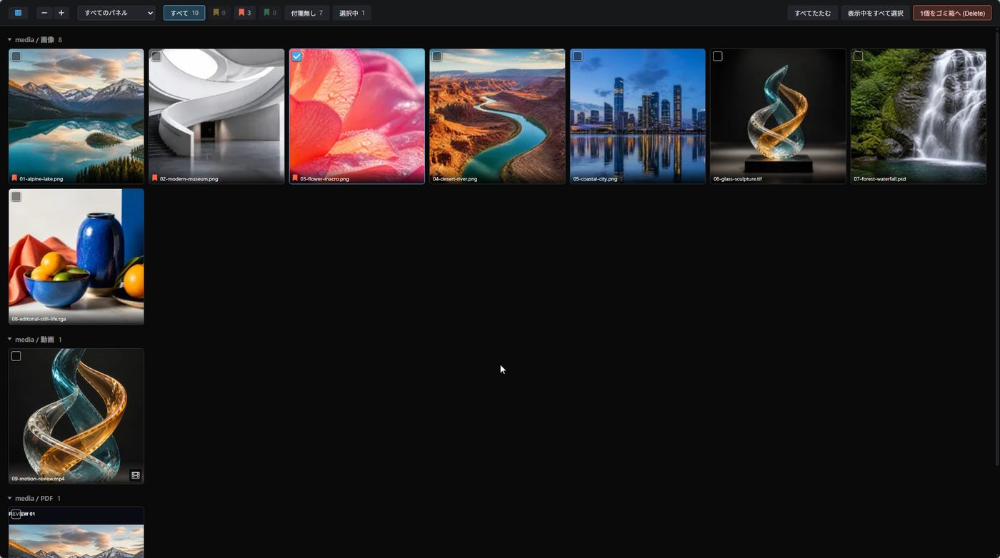</div>
    </div>
  </section>

  <section class="step">
    <div class="wrap step-grid rise">
      <div class="copy">
        <p class="eyebrow"><span class="n">08</span> 抜く</p>
        <h2>必要なところだけ、<br>1コマずつの画像に。</h2>
        <p>指定した範囲を連番の画像として書き出せます。<b>絵が替わったコマだけ</b>を抜くこともできるので、同じ絵が何コマも続く映像でも、変わったところだけが並びます。</p>
        <ul>
          <li><b>マーカー</b>で指定フレームを記憶できます</li>
          <li>動画に直接<b>メモしてスクリーンショット</b></li>
          <li>コマ数を<b>表示</b>し、<b>画像に焼きこむ</b>こともできます</li>
        </ul>
      </div>
      <div class="shot">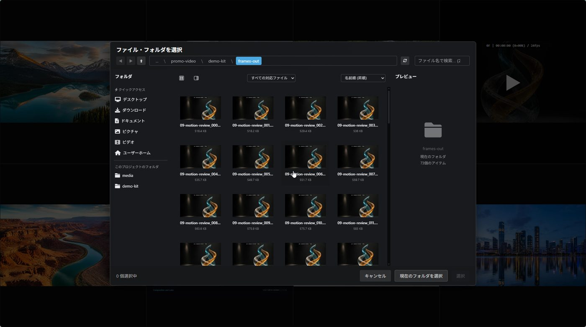</div>
    </div>
  </section>

  <section class="step">
    <div class="wrap step-grid rise">
      <div class="copy">
        <p class="eyebrow"><span class="n">09</span> 出す</p>
        <h2>ページを並べ替えて、<br>ひとつのPDFに。</h2>
        <p>掴んで入れ替え、いらないページを外して書き出せます。</p>
        <ul>
          <li><b>画像ファイルやPDF同士の結合</b>もできます</li>
          <li>作成した<b>メモも焼きこまれます</b></li>
          <li>そのまま<b>印刷</b>にも回せます</li>
        </ul>
      </div>
      <div class="shot">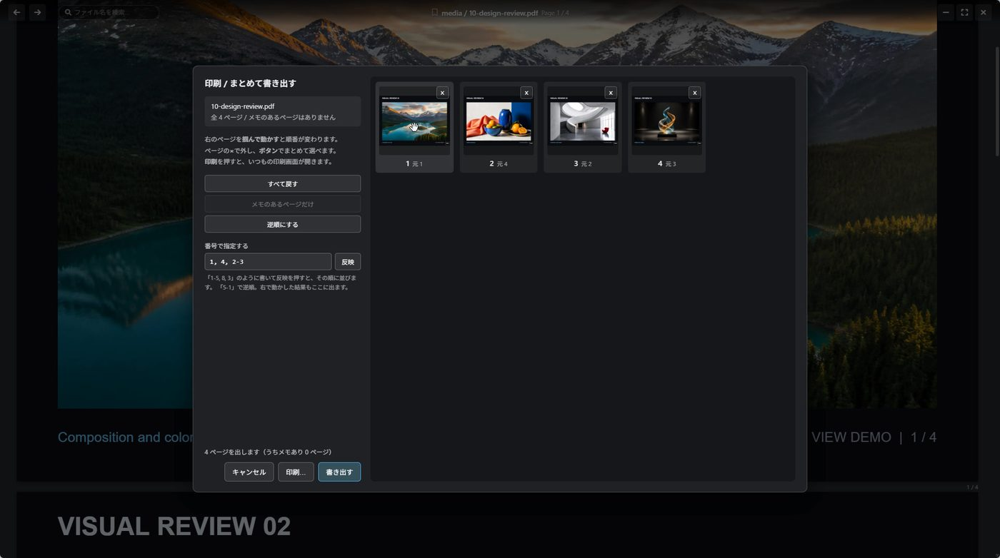</div>
    </div>
  </section>

  <section class="step">
    <div class="wrap step-grid rise">
      <div class="copy">
        <p class="eyebrow"><span class="n">10</span> 渡す</p>
        <h2>QRひとつで、手元の端末へ。</h2>
        <p>同じネットワークにつながっていれば、手軽にスマートフォンや別のPCで開けます。アップロードも、アカウントもいりません。</p>
        <ul>
          <li><b>QRコードやURL</b>からすぐアクセス</li>
          <li><b>まとめてダウンロード</b>することもできます</li>
          <li>初回はWindowsの<b>ファイアウォールの許可</b>が必要です</li>
        </ul>
      </div>
      <div class="shot">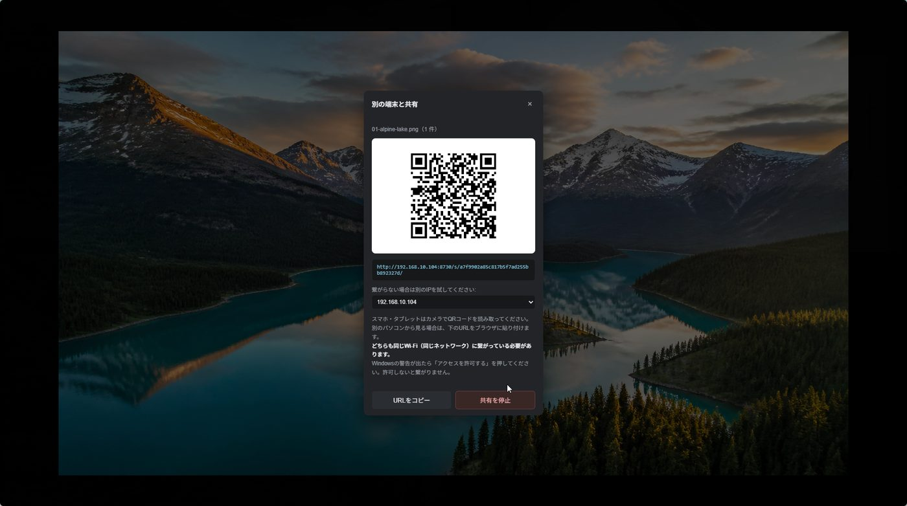</div>
    </div>
  </section>

  <section class="extras">
    <div class="wrap">
      <h2 class="rise">ほかにも</h2>
      <div class="cards rise">
        <div class="card">
          <h3>一括リネーム</h3>
          <p>連番や置換をかけながら、結果をその場で確認できます。かけ違えても元に戻せます。</p>
        </div>
        <div class="card">
          <h3>常駐して、すぐ呼び出す</h3>
          <p>×で閉じてもタスクトレイに残ります。<kbd>Ctrl</kbd>＋<kbd>Shift</kbd>＋<kbd>A</kbd>でいつでも前に出せます（変更可）。</p>
        </div>
        <div class="card">
          <h3>PDFの便利な機能</h3>
          <p>全ページを<b>縦並び</b>で続けて読めます。文書内の文字は<b>一括で全文コピー</b>でき、ページを<b>画像としてコピー</b>すれば、そのまま貼り付けて手を入れられます。</p>
        </div>
      </div>
    </div>
  </section>

  <section class="formats" id="formats">
    <div class="wrap">
      <h2 class="rise">対応形式</h2>
      <p class="fmt-lede rise">
        PSD・PSB、CLIP STUDIO PAINT の .clip、Canon・Nikon・Sony・富士フイルムなどのRAWも、
        書き出しをはさまずにそのまま開きます。
      </p>

      <div class="fmt-group rise">
        <p class="fmt-label">画像</p>
        <div class="chips">
          <span class="chip">jpg</span><span class="chip">png</span><span class="chip">gif</span>
          <span class="chip">webp</span><span class="chip">bmp</span><span class="chip">avif</span>
          <span class="chip">jxl</span><span class="chip">heic</span><span class="chip">tiff</span>
          <span class="chip">psd</span><span class="chip">psb</span>
          <span class="chip">clip</span><span class="chip">xcf</span>
          <span class="chip">tga</span><span class="chip">exr</span><span class="chip">hdr</span>
          <span class="chip">svg</span><span class="chip">dds</span><span class="chip">ico</span>
        </div>
      </div>

      <div class="fmt-group rise">
        <p class="fmt-label">RAW</p>
        <div class="chips">
          <span class="chip">cr2</span><span class="chip">cr3</span><span class="chip">nef</span>
          <span class="chip">arw</span><span class="chip">dng</span><span class="chip">raf</span>
          <span class="chip">orf</span><span class="chip">rw2</span><span class="chip">pef</span>
          <span class="chip">srf</span><span class="chip">x3f</span><span class="chip">mrw</span>
        </div>
      </div>

      <div class="fmt-group rise">
        <p class="fmt-label">動画</p>
        <div class="chips">
          <span class="chip">mp4</span><span class="chip">mov</span><span class="chip">m4v</span>
          <span class="chip">webm</span><span class="chip">mkv</span><span class="chip">avi</span>
          <span class="chip">wmv</span><span class="chip">flv</span><span class="chip">ts</span>
          <span class="chip">m2ts</span><span class="chip">3gp</span><span class="chip">ogv</span>
        </div>
      </div>

      <div class="fmt-group rise">
        <p class="fmt-label">音声</p>
        <div class="chips">
          <span class="chip">mp3</span><span class="chip">wav</span><span class="chip">flac</span>
          <span class="chip">m4a</span><span class="chip">aac</span><span class="chip">oga</span>
          <span class="chip">opus</span>
        </div>
      </div>

      <div class="fmt-group rise">
        <p class="fmt-label">文書</p>
        <div class="chips"><span class="chip">pdf</span></div>
      </div>

      <p class="fmt-note rise">
        CLIP STUDIO PAINT の <code style="font-family:var(--mono)">.clip</code> は、ファイルに保存されているプレビュー画像を取り出して表示します。
        RAW は現像ライブラリを通して読んでいるため、発売されたばかりの機種は読めないことがあります。
        開けないファイルがあれば、下のフォームから教えてください。
      </p>
    </div>
  </section>

  <section class="install" id="install">
    <div class="wrap">
      <h2 class="rise">インストール</h2>
      <ol class="steps rise">
        <li>
          <div>
            <h3>インストーラをダウンロードして実行</h3>
            <p><code style="font-family:var(--mono)">YAEView_<span data-version-plain>0.1.19</span>_x64-setup.exe</code> をダブルクリックします。</p>
          </div>
        </li>
        <li>
          <div>
            <h3>「WindowsによってPCが保護されました」と出たら</h3>
            <p><b>詳細情報</b> → <b>実行</b> の順に押してください。開発元の署名を付けていないため出る警告です。</p>
          </div>
        </li>
        <li>
          <div>
            <h3>スタートメニューから起動</h3>
            <p>「yae-view-tauri」で検索します。画像や動画を右クリックして「プログラムから開く」からでも開けます。</p>
          </div>
        </li>
      </ol>

      <div class="notice rise">
        <h3>先に知っておいてほしいこと</h3>
        <p>Windows 10 / 11 の64bit版専用です。Mac と Linux には対応していません。</p>
        <p>数千枚を一度に読み込むとサムネイルの生成に時間がかかります。ページ数の多いPDFも、最初の表示までしばらくかかることがあります。</p>
        <p>LAN共有は、初回にWindowsのファイアウォールで許可を押す必要があります。押していない場合、QRは正常に出るのに繋がりません。</p>
      </div>
    </div>
  </section>

  <section class="report" id="report">
    <div class="wrap">
      <h2 class="rise">不具合・要望</h2>
      <p class="intro rise">
        開けないファイル、表示の崩れ、「これができたら」と思ったこと。どれも助かります。
        アプリのヘルプ画面から開くと、バージョンなどが下の欄に自動で入ります。
      </p>

      <form class="form rise" id="reportForm" novalidate>
        <div class="field">
          <label for="body">内容</label>
          <textarea id="body" name="body" required
            placeholder="うまくいかないこと、こうなってほしいこと、どちらでも。両方でも構いません。&#10;&#10;例）PSDの入ったフォルダを4分割の左上に入れて、ホイールで送っていたら3枚目で表示が消えた&#10;例）パネルごとに表示倍率を覚えていてほしい"></textarea>
        </div>

        <div class="field">
          <label for="log">エラーの記録（任意）</label>
          <textarea id="log" name="log" class="log"
            placeholder="アプリでコピーした記録を Ctrl+V で貼り付けてください。"></textarea>
          <p class="hint">記録にはファイルのパスが含まれることがあります。見て、消したいところがあれば消してから送ってください。</p>
        </div>

        <div class="field">
          <label for="contact">返信先（任意）</label>
          <input type="email" id="contact" name="contact" placeholder="返事が要るときだけ">
        </div>

        <div class="field">
          <label for="diag">一緒に送られる情報</label>
          <div class="diag" id="diag" contenteditable="true" spellcheck="false" role="textbox" aria-multiline="true"></div>
          <p class="hint">この欄も直せます。送りたくないものは消してください。</p>
        </div>

        <input type="text" name="_gotcha" class="hp" tabindex="-1" autocomplete="off" aria-hidden="true">

        <button type="submit" class="submit">送信する</button>
        <p class="form-status" id="formStatus" role="status" aria-live="polite"></p>
        <p class="form-note" id="formNote"></p>
      </form>
    </div>
  </section>

  <section class="closing">
    <div class="wrap">
      <h2 class="rise">確認を、もっと速く。</h2>
      <div class="cta-row rise">
        <a class="download" href="https://github.com/saori-subaru/yaeview/releases/latest" rel="noopener">
          <svg viewBox="0 0 24 24" fill="none" stroke="currentColor" stroke-width="2.2" stroke-linecap="round" stroke-linejoin="round" aria-hidden="true">
            <path d="M12 3v12m0 0l-4.5-4.5M12 15l4.5-4.5M4 20h16"/>
          </svg>
          Windows版をダウンロード
        </a>
        <p class="meta"><b data-version>v0.1.19</b> ／ 無償のテスト版です</p>
      </div>
    </div>
  </section>
</main>

<footer>
  <div class="wrap">
    <span>YAE View</span>
    <span class="meta" data-version>v0.1.19</span>
    <span class="meta">© 2026 Sao N</span>
    <span class="sep"></span>
    <a href="privacy.html">プライバシーポリシー</a>
    <a href="https://github.com/saori-subaru/yaeview/releases" rel="noopener">リリース一覧</a>
  </div>
</footer>

<script>
// Japanese line-breaking and glyph selection want the document language, and
// the page ships as a fragment (an artifact host supplies <html>), so it is
// set here rather than as an attribute.
document.documentElement.lang = "ja";

/* ---------------------------------------------------------------
   The film's play button.

   Built here rather than in the markup so that a page whose script
   never runs keeps the native controls and stays playable, instead of
   showing a button that does nothing.

   Once playback starts the button is gone for good and the native
   controls take over - bringing it back on every pause would fight
   with the seek bar.
   --------------------------------------------------------------- */
for (const box of document.querySelectorAll(".player")) {
  const video = box.querySelector("video");
  if (!video) continue;

  video.controls = false;

  const btn = document.createElement("button");
  btn.type = "button";
  btn.className = "play";
  btn.setAttribute("aria-label", "動画を再生");
  btn.innerHTML = '<svg viewBox="0 0 100 100" aria-hidden="true">'
    + '<polygon points="33,20 80,50 33,80" fill="#fff"></polygon></svg>';

  const start = () => {
    video.controls = true;
    btn.remove();
    video.play().catch(() => {
      // blocked or unsupported - leave the native controls in charge
    });
  };

  btn.addEventListener("click", start);
  // started some other way (keyboard on the video, a deep link) - get out of the way
  video.addEventListener("play", () => {
    video.controls = true;
    btn.remove();
  }, { once: true });

  box.appendChild(btn);
}

/* ---------------------------------------------------------------
   Release details.

   RELEASE is the fallback shown before - or instead of - the lookup
   below. Keep it roughly current, but it no longer has to be exact.
   --------------------------------------------------------------- */
const RELEASE = { version: "0.1.19" };
const REPO = "saori-subaru/yaeview";

const showRelease = ({ version, size, url }) => {
  for (const el of document.querySelectorAll("[data-version]")) el.textContent = "v" + version;
  for (const el of document.querySelectorAll("[data-version-plain]")) el.textContent = version;
  for (const el of document.querySelectorAll("[data-size]")) {
    el.textContent = size ? `・約${Math.round(size / 1e6)}MB` : "";
  }
  if (url) {
    for (const a of document.querySelectorAll("a.download")) {
      a.href = url;
      a.setAttribute("download", "");
    }
  }
};

showRelease(RELEASE);

// Hand over the installer itself rather than a page about it. The filename
// carries the version, so the URL has to be looked up rather than guessed.
// Any failure leaves the button pointing at the releases page, which works.
fetch(`https://api.github.com/repos/${REPO}/releases/latest`, {
  headers: { Accept: "application/vnd.github+json" }
})
  .then((r) => (r.ok ? r.json() : Promise.reject(r.status)))
  .then((rel) => {
    const exe = (rel.assets || []).find((a) => /\.exe$/i.test(a.name));
    if (!exe) return;
    showRelease({
      version: String(rel.tag_name || "").replace(/^v/, "") || RELEASE.version,
      size: exe.size,
      url: exe.browser_download_url
    });
  })
  .catch(() => { /* keep the fallback */ });

/* ---------------------------------------------------------------
   Report form.

   Put the URL your form backend gives you in FORM_ENDPOINT. Web3Forms,
   Formspree, Basin and an Apps Script web app all accept a POSTed
   FormData, so nothing else needs changing. While it is empty the form
   opens a pre-filled mail draft instead - the same thing the app does
   today - so the page is never a dead end.
   --------------------------------------------------------------- */
/* 送信先。Apps Script をウェブアプリとしてデプロイして出てくる
   ".../exec" で終わるURLを入れる。中身は site/form-backend.gs。

   空の間はメールの下書きが開くので、設定前でも行き止まりにはならない。 */
const FORM_ENDPOINT = "https://script.google.com/macros/s/AKfycbzQ_WjLOEFma43XU1QIRIuZpOA1nDnc70sFH0w8pZQGjc2hPjCbr9KJV1woaWO-e3-scg/exec";

const REPORT_TO = ["yaeview", "gmail.com"].join("@");

const form = document.getElementById("reportForm");
if (form) {
  const diag = document.getElementById("diag");
  const status = document.getElementById("formStatus");
  const note = document.getElementById("formNote");

  // Whatever the app puts in the query string is shown, so the two sides
  // never have to agree on a fixed list of parameter names.
  const LABELS = { v: "バージョン", version: "バージョン", build: "ビルド",
                   os: "OS", ua: "環境", ext: "対象の拡張子", from: "送信元" };
  const params = new URLSearchParams(location.search);
  const lines = [];
  for (const [k, val] of params) {
    if (val) lines.push((LABELS[k] || k) + ": " + val);
  }
  if (!params.has("ua")) lines.push("環境: " + navigator.userAgent);
  if (!params.has("from")) lines.push("送信元: " + ([...params].length ? "アプリ" : "サイト"));
  diag.textContent = lines.join("\n");

  note.textContent = FORM_ENDPOINT
    ? "送信すると、この内容が開発者に届きます。"
    : "いまは送信先が未設定のため、押すとメールの下書きが開きます。";

  form.addEventListener("submit", async (e) => {
    e.preventDefault();
    status.textContent = "";
    status.removeAttribute("data-tone");

    const body = form.body.value.trim();
    if (!body) {
      status.textContent = "内容を書いてください。";
      status.dataset.tone = "ng";
      form.body.focus();
      return;
    }
    if (form._gotcha.value) return;              // a bot filled the hidden field

    const data = new FormData();
    data.append("内容", body);
    data.append("記録", form.log.value.trim());
    data.append("返信先", form.contact.value.trim());
    data.append("環境", diag.textContent.trim());
    data.append("subject", "YAE View の不具合・要望");

    if (!FORM_ENDPOINT) {
      const text = [body, "", "----------------", diag.textContent.trim(),
                    form.log.value.trim()].join("\n");
      location.href = "mailto:" + REPORT_TO
        + "?subject=" + encodeURIComponent("YAE View の不具合・要望")
        + "&body=" + encodeURIComponent(text.slice(0, 1800));
      return;
    }

    const btn = form.querySelector(".submit");
    btn.disabled = true;
    btn.textContent = "送信中…";
    try {
      // FormData のみ、独自ヘッダーなし。こうしておくとブラウザが
      // 事前確認の問い合わせを挟まないので、Apps Script 側で
      // 受け口を余分に用意しなくて済む
      const res = await fetch(FORM_ENDPOINT, { method: "POST", body: data });
      if (!res.ok) throw new Error(res.status);

      // シートに書けなかった場合は ok:false が返る。
      // 読めなかったときは黙って成功扱いにする（送信自体は届いている）
      let payload = null;
      try { payload = await res.json(); } catch (ignored) {}
      if (payload && payload.ok === false) throw new Error(payload.error || "rejected");
      form.reset();
      diag.textContent = lines.join("\n");
      status.textContent = "送信しました。ありがとうございます。";
      status.dataset.tone = "ok";
    } catch (err) {
      status.textContent = "送信できませんでした。お手数ですが " + REPORT_TO + " まで直接お願いします。";
      status.dataset.tone = "ng";
    } finally {
      btn.disabled = false;
      btn.textContent = "送信する";
    }
  });
}

// Sections settle in as they arrive. Skipped entirely when the viewer has
// asked for reduced motion, or where IntersectionObserver is unavailable -
// in both cases the page simply stays as it already is, fully visible.
const wantsMotion = !matchMedia("(prefers-reduced-motion: reduce)").matches;

if (wantsMotion && "IntersectionObserver" in window) {
  const targets = document.querySelectorAll(".rise");
  document.documentElement.classList.add("js-anim");

  const reveal = (el) => el.classList.add("in");
  const io = new IntersectionObserver((entries) => {
    for (const e of entries) {
      if (!e.isIntersecting) continue;
      reveal(e.target);
      io.unobserve(e.target);
    }
  }, { rootMargin: "0px 0px -12% 0px" });
  for (const el of targets) io.observe(el);

  // Backstop: nothing stays hidden just because the observer never ran.
  setTimeout(() => targets.forEach(reveal), 3000);
}
</script>
